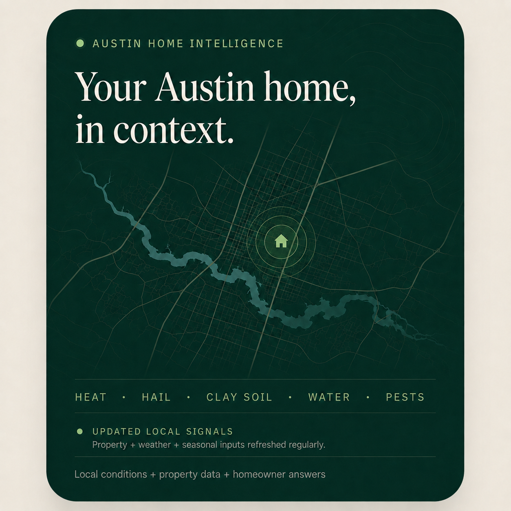
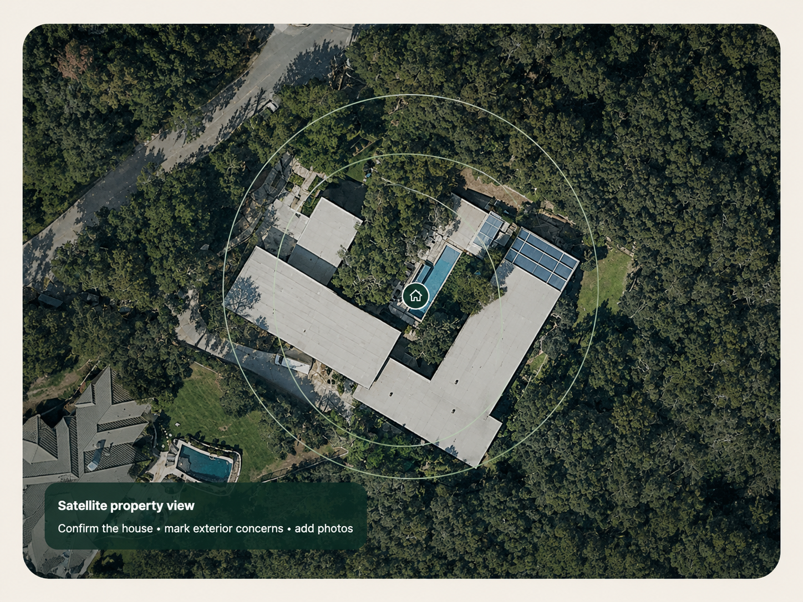

Know What Your Austin Home Needs Now—And What Can Wait.
Home maintenance is tough to keep up with. Get a free, personalized report that shows what deserves attention first, what you should keep an eye on, and what probably isn’t worth spending money on yet.

Your home to-do list shouldn’t feel endless.
There’s always something.
The AC sounds different. A crack appears. The water heater is getting older. Someone says you should clean the ducts. Then you remember the gutters, trees, plumbing and everything else.
Soon, the list never ends, and keeping track of it all starts becoming a bit overwhelming.
The bigger worry is that you’re missing important tasks that could prevent bigger issues later on.
And when something finally needs work, you can end up getting wildly different quotes without knowing which advice to trust.
You shouldn’t have to become a home expert just to make smart decisions about your house.
Get a short list for your home—not another 100-item checklist.
Enter your address and answer a few simple questions about your home. Your free Home Risk Report looks at your answers alongside Austin-specific property, weather, seasonal and public information to help you decide what deserves attention first.
See what may need action now instead of trying to tackle everything at once.
Separate sensible prevention from work that can responsibly wait.
Use local pricing guides, practical questions and Austin rules before comparing quotes.
The goal isn’t to find more work for your house. It’s to help you make a better decision about the work you already have.
See what warning signs matter and when spending money may make sense.
Use local pricing guides to get context before you start comparing quotes.
Understand Austin rules before work begins.
Check Austin protected-tree rules before approving the job.
See what applies to your home instead of relying on an old schedule.
Start with the signs that make cleaning worthwhile—and the ones that probably don’t.
Fix the right things first.
Your report helps turn a long home-maintenance list into a much shorter set of priorities.
Fix the right things first.
See which potential issues deserve attention now instead of trying to tackle everything at once.
Spend money where it matters.
Maintenance can be much cheaper than waiting for something to fail. But doing work too early wastes money too.
Know more before you call someone.
If professional help makes sense, use pricing information, practical guides and Austin-specific rules to get multiple quotes with better context.
Start with the property. Then ask only what matters.
Enter your address and answer a few simple questions. The whole-home scan can adapt to what the homeowner is actually concerned about.

Confirm the house • mark exterior concerns • add photos
123 Main St
#1 priority: HVAC
The report shows what may need action now, what is worth monitoring, and what can probably wait—before asking whether you want a quote.
Advice is more useful when selling you something isn’t the first goal.
Your risk report can tell you that something deserves attention. It can also tell you to monitor it—or that professional service probably isn’t needed right now.
That separation matters. The report is built from homeowner answers and Austin-specific information, with a published methodology explaining how recommendations are made.
“[[PLACEHOLDER: Short Austin homeowner quote about knowing what to handle first.]]”— Austin homeowner
“[[PLACEHOLDER: Short Austin homeowner quote about avoiding unnecessary work or expense.]]”— Austin homeowner
Eight specialized checks. One property profile.
Facebook ads can still land directly on the matching diagnostic, while the main site helps homeowners understand what matters first.
AC Life Check
Age, cooling performance, repairs and maintenance—then a practical repair/service/replacement path.
Plumbing Risk Check
Water heater, leaks, drains, pressure and freeze history.
Pest Identifier
Start with signs and frequency; narrow the issue before recommending treatment.
Tree Risk Check
Roof clearance, deadwood, lean, storm damage—and mark the tree on the property.
Duct Cleaning Test
A skeptical test that can tell you when cleaning is probably unnecessary.
Moisture Risk Check
Stains, odors, leak history and duration—focused on finding the source first.
Pool Loss Check
Leak versus evaporation, equipment signs and an optional satellite marker.
Insurance Checkup
Coverage-review questions around deductibles, rebuild limits and property changes.
Useful to homeowners. Structured enough to be cited.
Beyond the free report, Austin Home Intelligence publishes source-linked answers, live public signals and transparent methodology around the questions Austin homeowners actually ask.
Questions before you check your home?
Is this a home inspection or a scan of my house?
No. No one visits your home, and this is not a professional home inspection. Your report uses your answers plus relevant Austin and property information to help you prioritize possible risks.
Why do you need my address?
Your address helps make the information relevant to your property and location instead of giving you a generic national checklist. You’ll answer a few questions before seeing your personalized results.
Will the report just tell me to hire a contractor?
No. Some items may deserve professional help. Others may be worth monitoring or safely putting off. If you do need help, you can choose to connect with a relevant local contractor.
You don’t need to fix everything today.
You just need to know what matters, what can wait, and what your next smart move is. A few questions now could help you avoid a much more expensive surprise later.
Get My Free Home Risk Report